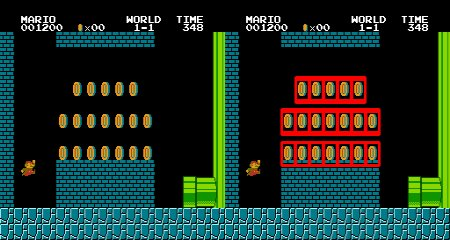

Template Matching
Goals
In this chapter, you will learn
- To find objects in an image using Template Matching
- You will see these functions : cv2.matchTemplate(), cv2.minMaxLoc()
Theory
Template Matching is a method for searching and finding the location of a template image in a larger image. OpenCV comes with a function cv2.matchTemplate() for this purpose. It simply slides the template image over the input image (as in 2D convolution) and compares the template and patch of input image under the template image. Several comparison methods are implemented in OpenCV. (You can check docs for more details). It returns a grayscale image, where each pixel denotes how much does the neighbourhood of that pixel match with template.
If input image is of size (WxH) and template image is of size (wxh), output image will have a size of (W-w+1, H-h+1). Once you got the result, you can use cv2.minMaxLoc() function to find where is the maximum/minimum value. Take it as the top-left corner of rectangle and take (w,h) as width and height of the rectangle. That rectangle is your region of template.
If you are using cv2.TM_SQDIFF as comparison method, minimum value gives the best match.
Template Matching in OpenCV
Here, as an example, we will search for Messi’s face in his photo. So I created a template as below:

We will try all the comparison methods so that we can see how their results look like:
import cv2 import numpy as np from matplotlib import pyplot as plt img = cv2.imread('messi5.jpg',0) img2 = img.copy() template = cv2.imread('template.jpg',0) w, h = template.shape[::-1] # All the 6 methods for comparison in a list methods = ['cv2.TM_CCOEFF', 'cv2.TM_CCOEFF_NORMED', 'cv2.TM_CCORR', 'cv2.TM_CCORR_NORMED', 'cv2.TM_SQDIFF', 'cv2.TM_SQDIFF_NORMED'] for meth in methods: img = img2.copy() method = eval(meth) # Apply template Matching res = cv2.matchTemplate(img,template,method) min_val, max_val, min_loc, max_loc = cv2.minMaxLoc(res) # If the method is TM_SQDIFF or TM_SQDIFF_NORMED, take minimum if method in [cv2.TM_SQDIFF, cv2.TM_SQDIFF_NORMED]: top_left = min_loc else: top_left = max_loc bottom_right = (top_left[0] + w, top_left[1] + h) cv2.rectangle(img,top_left, bottom_right, 255, 2) plt.subplot(121),plt.imshow(res,cmap = 'gray') plt.title('Matching Result'), plt.xticks([]), plt.yticks([]) plt.subplot(122),plt.imshow(img,cmap = 'gray') plt.title('Detected Point'), plt.xticks([]), plt.yticks([]) plt.suptitle(meth) plt.show()
See the results below:
- cv2.TM_CCOEFF

- cv2.TM_CCOEFF_NORMED

- cv2.TM_CCORR
- cv2.TM_CCORR_NORMED

- cv2.TM_SQDIFF

- cv2.TM_SQDIFF_NORMED

You can see that the result using cv2.TM_CCORR is not good as we expected.
Template Matching with Multiple Objects
In the previous section, we searched image for Messi’s face, which occurs only once in the image. Suppose you are searching for an object which has multiple occurances, cv2.minMaxLoc() won’t give you all the locations. In that case, we will use thresholding. So in this example, we will use a screenshot of the famous game Mario and we will find the coins in it.
import cv2 import numpy as np from matplotlib import pyplot as plt img_rgb = cv2.imread('mario.png') img_gray = cv2.cvtColor(img_rgb, cv2.COLOR_BGR2GRAY) template = cv2.imread('mario_coin.png',0) w, h = template.shape[::-1] res = cv2.matchTemplate(img_gray,template,cv2.TM_CCOEFF_NORMED) threshold = 0.8 loc = np.where( res >= threshold) for pt in zip(*loc[::-1]): cv2.rectangle(img_rgb, pt, (pt[0] + w, pt[1] + h), (0,0,255), 2) cv2.imwrite('res.png',img_rgb)
Result:
Additional Resources
Exercises